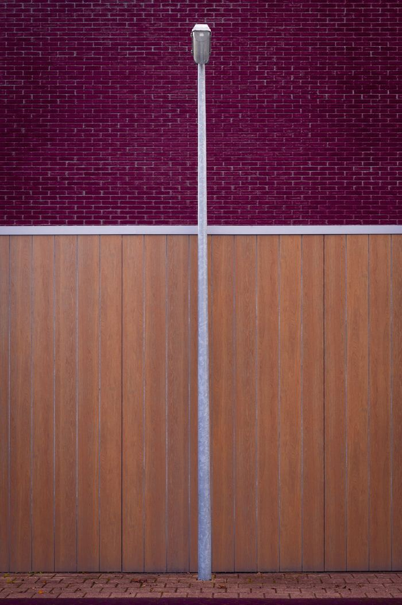
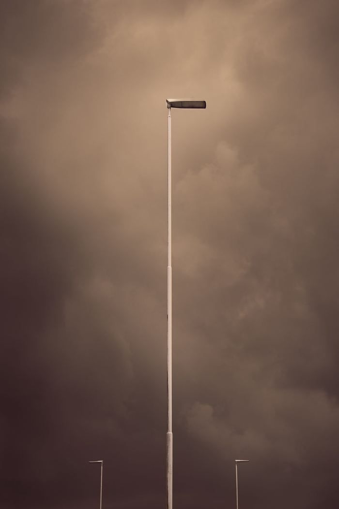
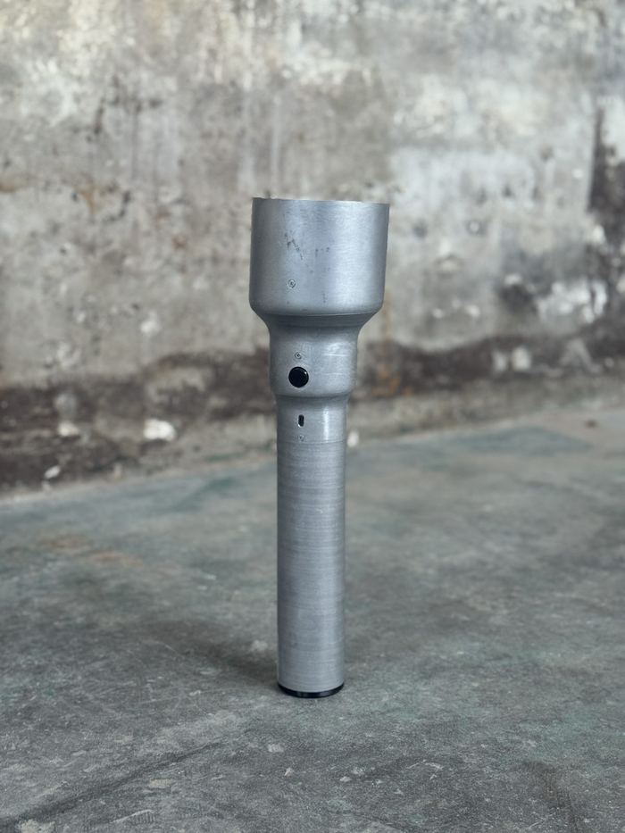
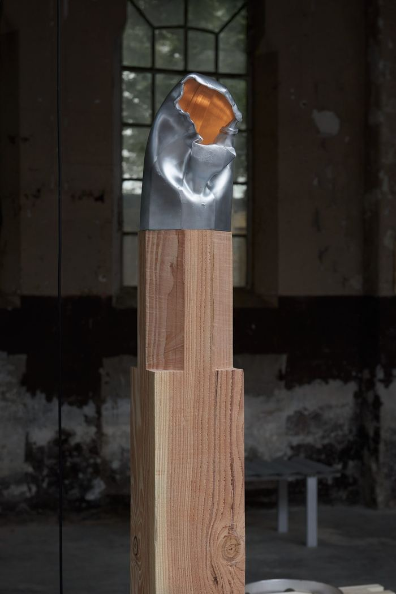
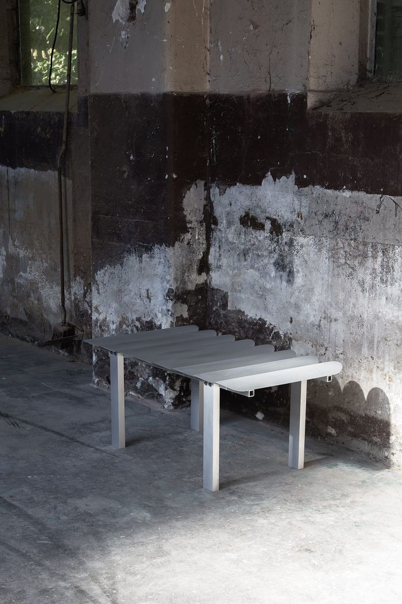
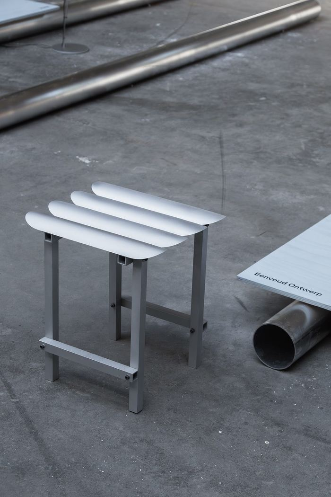
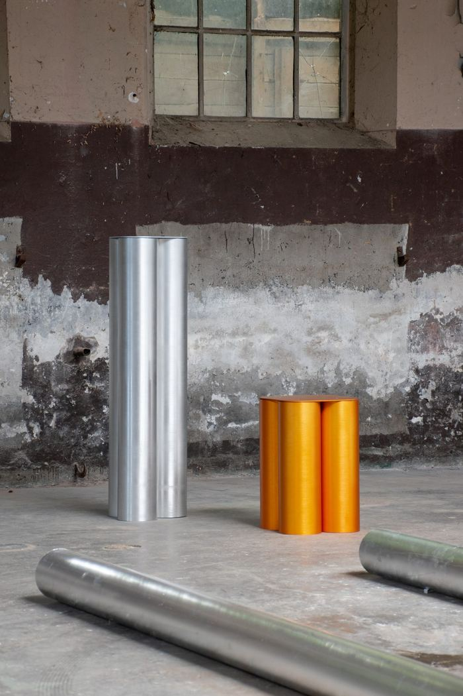
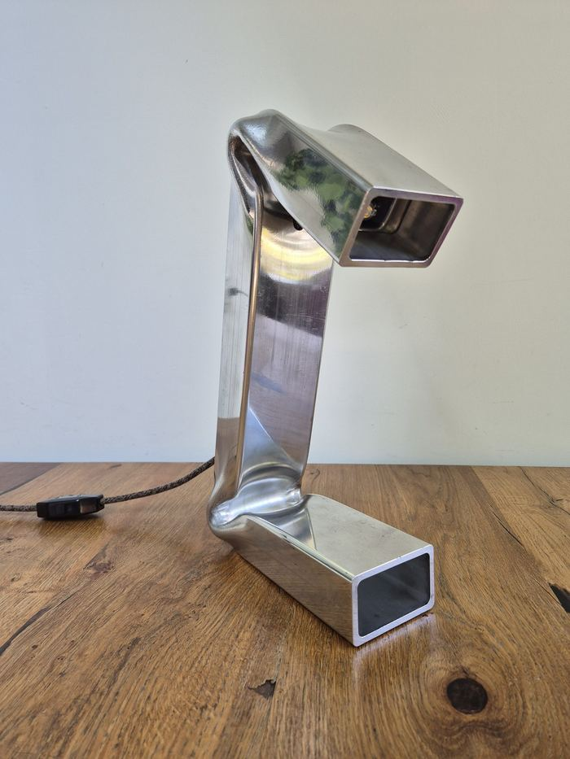

Season 02 — GROUNDGallery 4 — floorAll makers →
ECHO
This edition — From Residue to Form
ECHO is a recurring exhibition that asks when something stops being waste and becomes material again. Each edition takes a different residual stream as its starting point.
This edition works with aluminium from Nedal: the offcuts, the rejected extrusion profiles, and the access panels designed to stay hidden inside street lighting poles. Thirteen makers, one material source, the floor of Gallery 4. Each work begins where the industrial process ends. What remains, returns.
Instagram · Message ECHO directly
Sales enquiries for every ECHO work are coordinated by Maaike Rabbinge, who initiated the collective — not by MADART Foundation. 100% of the sale proceeds go to the maker.
—The collective13 makers

Maaike Rabbinge
Eenvoud Ontwerp
Works from the conviction that what already exists carries its own design logic. For ECHO, which she initiated, she used the access panels from street lighting poles — components designed to stay hidden inside the structure. She brought them out.

Coen Beeksma
Studio Beeks
Furniture design and material research, with a focus on honest construction. His bench is the only piece in ECHO combining two structural materials: solid oak and reclaimed aluminium.

Sophie Wantia
Studio Wantia
Graphic and playful pattern, driven by textile and colour. She used aluminium tubes as a weaving material: the only textile work in ECHO. The tubes are still tubes, and also warp and weft.

Frank Penders
Material research and spatial presence, combining aluminium with local Douglas fir and elm. Not expression as a goal, but presence as a prerequisite.

Erwin Woldring
EWOL
A craftsman known for handmade electric guitars. He contributes the two most contrasting objects in ECHO — a lamp that anchors a room and a bracelet worn against skin, from the same discarded stock. The difference in scale is the point.

Marc th. van der Voorn
Designs flexible connections that shift with whatever residual aluminium is at hand. The most domestic object in ECHO: material that once carried current through a street pole now holds a flame.

Jeroen van Veluw
Designs for permanence, shaped by an interest in animism and by growing up in Ghana. Two objects under one title, one anodised and one raw, asking what aluminium becomes when it is treated as material worth attending to.

Ritsert Mans
Explores how materials are experienced once removed from their original context. He brings two registers: a bowl that looks like it grew, and a flashlight that looks like a drawing of one.

Cynthia & Kevin Kars-Boom
Studio Kars + Boom
Colour, rhythm and material reduced to their essence. Where most of ECHO speaks in silver and grey, they wrap the aluminium in vinyl, paint and rope. The poles are still recognisable, and also something else entirely.

Billie-Jo Krul
A Dutch-Canadian photographer using the camera for emotional archaeology. Street lighting poles recur throughout her work — not as infrastructure, but as stand-ins for human presence. Where the others transform the residue of production, she transforms the residue of experience.

Jan Willem van Elten
Economy of means: as much as possible with as little as necessary. REST is made from a single profile that was already out of spec when it left the factory. It had its first life in a system. Now it holds a glass.

Frederik Wasseur
Welder at Nedal
An aluminium expert welder at Nedal, he knows the material from the inside. His work begins with the profiles that fail quality control. He is the only maker present at the moment the material is refused, and that proximity is inseparable from the work.

Zowa Rindt
ZOWA
Designs without unnecessary additions: no superfluous components, no finish applied from outside. The surface is the result of making, not of coating. Sway is three parts and no decoration. The lamp does not announce itself. It stands.
—Works21 recorded
















